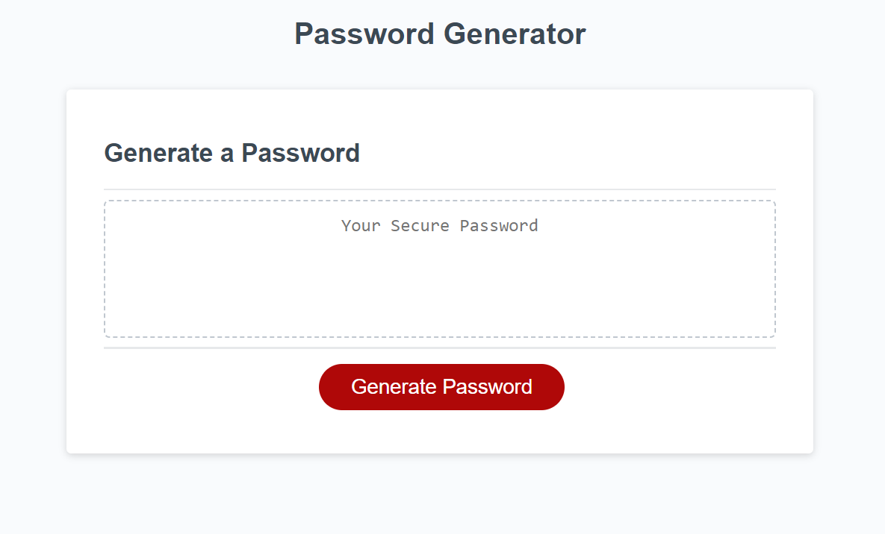

Projects
Coding Bootcamp Study Guide
This study guide is for the coding bootcamp that I am enrolled in. It contains useful items that I have learned so far within the bootcamp. Click the image to view

Horiseon Marketing Management
This is a webpage for a fictitious marketing management company named Horiseon. The webpage contains information about the services that Horiseon offers. Click the image to view
Used Car Dealership
This website is for a fictitious used car dealership specializing in the sale of exotic vehicles. Click the image to view
 .
.
Stock Trading App
This is a stock market trading app. It allows you to view stock values, view trends, and make changes to your stock portfolio. Click the image to view
Music History Webpage
This is a website dedicated to music history. The website content specializes in the history of rock and roll. Click the image to view